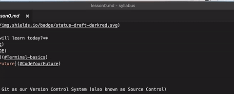
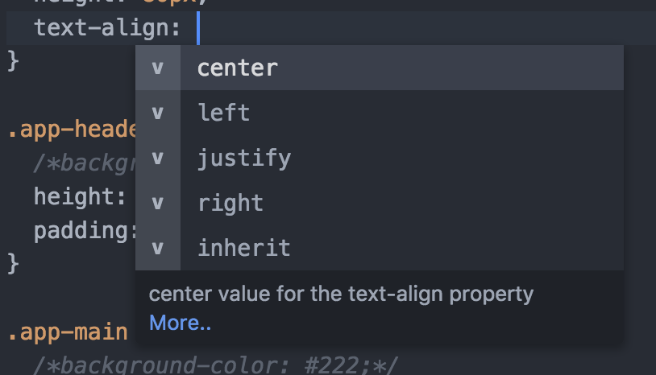

Week 0.2
Introduction to the terminal
During your course journey and onwards, the terminal (also known as command line) will be one of your most valuable tools. It will help you to interact with you computer faster, by helping you to:
- Create and delete files
- Install web development tools
- Use source control (explained in the next lesson)
- Start a server
All this will make sense as we progress with the lessons. For now, we would like you to get familiar with it by following this tutorial:
Commonly used commands
There's a set of commands you should become comfortable with during the course to allow you to effectively move around the filesystem and write software on your laptop.
cd- change directory. To move up into the parent directory use:cd ..ls- list the contents of a directory. Can also be used asls [directory_name]to list the contents of a specific directory without actually moving (withcd) to itpwd- print the full location of your current directorymkdir [name]- create a new directory, with the givennameafter a spacetouch [file_name]- create a new file, with the given name (don't forget to add the extension, like.cssor.html)rm [file_name]- remove a filerm -r [directory_name]- remove a directory (and all files inside that directory)
Introduction to VS Code
VS Code is the application we will use to write code.
File tree view
VS Code has an Explorer sidebar on the left side which displays files in a tree view. Creating, renaming and moving files can be done directly in VS Code.

Finding files
When working with big projects, you will often need to find a file quickly, without having to go through the tree view manually.
The keyboard shortcut to do this is: Ctrl + P (or Cmd + P on Mac)

Auto-complete
VS Code has auto-completion, which gives you suggestions of what you can can write next when you type something. For example, when writing a CSS property, it will tell you what values you can assign it to:

Spell-checking
It can be easy to make spelling mistakes when coding, however VS Code does not have in-built spell-checking. Let's install a spell checker extension which will help reduce the number of errors made coding.
Git
👩🏫 Reading this in the class? Turn off your laptop screen and pay attention to the instructor. Ask questions!
🏠 Reading this at home? Click here to access the full offline Git workshop.
Workshop Exercises
You'll find these in the full guide linked above as well.
Part 1
- Create a new folder with
mkdir cdto that folder- run
git init - create a simple CV file
addit to be committedcommitit with a message- create a cover letter file
addit to be committedcommitit with a message- now make some changes to both files
addboth files to be committedcommityour change with a message
Part 2
- Make some changes to your CV
- use
git statusand see what appears (notice the red file) addthe CV to be part of the next commit- use
git statusagain (notice how it's now green) commitit with a message- use
git status(there should be no files now) - change CV again
addit to be part of the next commit- now change the Cover Letter
- use
git status(notice how one is green and one is red) commitwith a message- use
git status(notice how there's only the red Cover Letter now) addthe Cover Letter andcommit- use
git status(notice how you have no files) - use
git logto see what changes you made
Part 3
- Go to https://github.com and create a new account
- Create a new repository

- Copy the commands it gives you and run them in the terminal

- run
git push
Introduction to programming 2
Revising loops and functions
Group homework revision
We're going to look at https://studio.code.org/s/course3/stage/6/puzzle/11 together.
Conditionals
What makes computers different from all the machines in history that came before them?
Computers can make decisions.
This is useful in all sorts of situations. When your phone battery is low, your phone can decide to pop up a message and tell you to plug it in. If you type a word wrongly when you're writing an email, the spell-checker can decide to draw a squiggly line under it. This is just the tip of the iceberg: our phones and computers are making decisions all the time, thousands of times a second.
When we write computer programs, we can tell the computer to make decisions too.
The word we need is: if.
It works the same way we would use it in conversation if we were telling someone to do something.
"Go to the shops and get a litre of milk. If eggs are half price then buy six."
go to the shops
get a litre of milk
if eggs are half price
then buy six
There are two different possible outcomes.
If eggs are half price, we will buy six. If eggs are not half price, we will not buy any.
We call this a conditional. If the condition is met we do something. If it is not met, we don't.
What do we mean by condition?
A condition is something that can be either true or false. It's something the computer has to check in order to make the decision.
Which of these things are conditions? (Hint: try to think if it is possible for the sentence to be true or false).
- "It is raining."
- "Water the plants."
- "My name is Inigo Montoya."
- "Wake the mentors up."
- "The mentors are awake."
Code.org exercises
Please go to https://studio.code.org/s/course3/stage/7/puzzle/1 and do puzzles 1 to 3.
Else
Sometimes we want to choose between two different courses of action: we do one thing when the condition is true, and another thing when the condition is false.
To return to the eggs example:
if eggs are half price
buy twelve eggs
else
buy six eggs
This is the same as:
if eggs are half price
buy twelve eggs
if eggs are not half price
buy six eggs
It is not the same as:
if eggs are half price
buy twelve eggs
buy six eggs
What is the difference?
Code.org exercises
Please go to https://studio.code.org/s/course3/stage/7/puzzle/1 and do puzzles 4 to 8.
While loops
Up until now we've used repeat until.
There is no repeat until command in JavaScript. Instead we have while.
While is like repeat until but the condition is the other way around. Instead of stopping when something is true, we stop when something is not true.
This makes while similar to if: if the condition is true, then we will carry out the block of commands attached to the if or while, and if it is not true, we don't.
Code.org exercises
Please go to https://studio.code.org/s/course3/stage/12/puzzle/1 and do puzzles 1 to 9.
Solving problems with code
One of the most important skills to learn as a programmer is to identify when solving a problem requires either making a decision or doing the same thing repeatedly.
Here are some problems to solve - do they require a loop, a conditional, or both?
- Printing all the words in the dictionary starting with the letter K
- Multiplying all the numbers from 1 to 10 together
- Checking if the key the user just pressed was "space"
- Adding up the prices of all the items in an online shopping basket
- Replacing all the occurrences of "teh" in a document with "the"
- Finding out if anyone in the class has a sister who speaks Japanese
Homework
- Do the nested loop exercises starting at https://studio.code.org/s/course3/stage/13/puzzle/1.
- Do the rest of the debugging exercises starting at https://studio.code.org/s/course3/stage/14/puzzle/5.